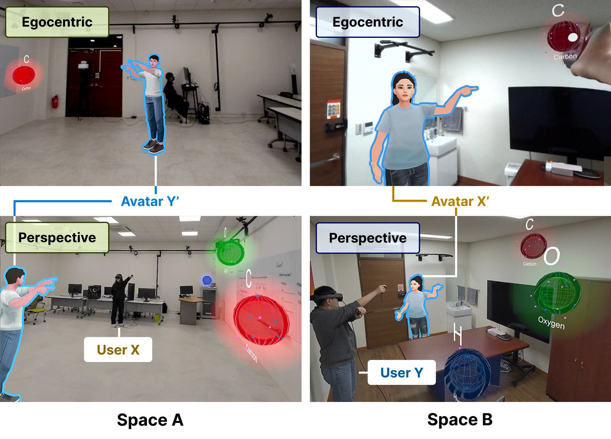
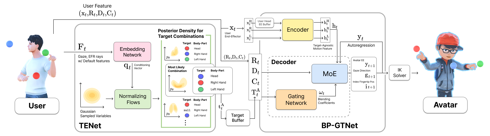

Part-wise Translation of Upper-body Gestures via Real-time Target Estimation for Virtual Avatars in Dissimilar Environments
Abstract

In extended reality telepresence, virtual avatars must accurately convey users' intent across dissimilar environments. We propose a novel neural network framework for real-time, part-wise translation of upper-body gestures to virtual avatars in heterogeneous environments. Our approach advances beyond prior methods in three key aspects: (1) real-time estimation of users' interaction targets; (2) unsupervised learning of target-agnostic motion features that better preserve fine-grained motion details; and (3) part-wise translation in which the head and individual hands can independently reference different targets simultaneously. Together, these advances allow users to select arbitrary interaction targets from multiple candidates and reference different targets concurrently with different body parts, while enabling avatars to better preserve users' motion details. These capabilities are realized through two novel networks: a Target Estimation Network that interprets sparse user tracking signals to infer target positions for the head and hands, and a Body-Part Gesture Translation Network that autoregressively generates avatar poses conditioned on these targets. Despite being trained on data from a single individual, our framework translates natural upper-body gestures across diverse users and avatars. We validate the effectiveness of our approach through comparisons with state-of-the-art methods, qualitative animation results, and a user evaluation in telepresence scenarios.
Method Overview

Real-time Target Estimation and Part-wise Gesture Translation: Diverse Users and Avatars
Upper-body gestures of test subjects with diverse heights, arm lengths, and handedness (left) and the avatar motions translated in real time by our framework (right). Target objects are positioned differently for the user and the avatar, and the predicted targets for the head (red), right hand (green), and left hand (blue) are shown; smaller spheres indicate higher estimation consistency, whereas larger ones reflect increased uncertainty during target transitions. Although trained on the motion data of a single 170 cm subject, our framework generalizes to diverse users and avatars.
Comparison of TENet with Alternative Network Architectures
This video contains audio. Unmute the player to listen.
Target estimation results of TENet (ours), Baseline (Real NVP with an MLP embedding network), Diffusion (a residual MLP-based diffusion regression model), and TENet-Indep (separate flow networks for each body part), compared with the ground truth (GT). Joint estimation across body parts lets TENet respond to target transitions most rapidly.
Comparison of BP-GTNet (Ours) with UGNet (Baseline)
Ablation Study of BP-GTNet Architecture Design
XR Application Demo
Limitation: Target Distributions with Larger Dispersion
This video contains audio. Unmute the player to listen.